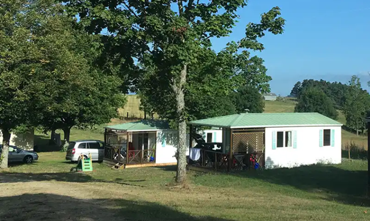
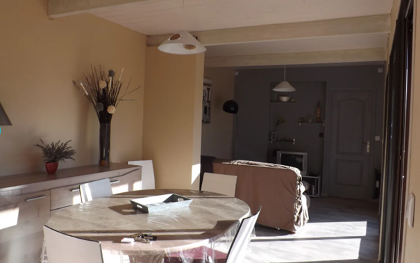
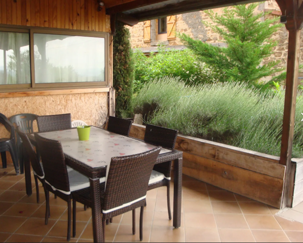

Logements au Château
Le domaine propose à la location quelques lits en dortoirs. Il est également possible, si vous le souhaitez, d'installer votre tente, camping-car, hutte ou sac de couchage dans les jardins du domaine. Vous aurez alors accès librement à une douche et des toilettes. Si vous êtes intéressés par une de ces solutions, nous vous remercions de nous en faire part, afin que nous puissions nous organiser en conséquence ou réserver votre place dans le dortoir auprès du chatelain. Sinon, vous trouverez ci-dessous quelques propositions d'hébergements à moins de 15 minutes de route :
Hébergements

Cottage - Le Mouy Vieux
2 min en voiture • 7 voyageurs
2 min en voiture • 7 voyageurs

Gîte - Les Petites Améthystes
2 min en voiture • 6 voyageurs
2 min en voiture • 6 voyageurs

Maison - Marguerite
2 min en voiture • 5 voyageurs
2 min en voiture • 5 voyageurs

Domaine Bellevue
2 min en voiture • 12 voyageurs
2 min en voiture • 12 voyageurs

Petit Gîte
3 min en voiture • 4 voyageurs
3 min en voiture • 4 voyageurs

Gîte sur le lac
3 min en voiture • 4 voyageurs
3 min en voiture • 4 voyageurs

Mobil-home - Camping
3 min en voiture • 5 voyageurs
3 min en voiture • 5 voyageurs

Gîte La Sagne
3 min en voiture • 5 voyageurs
3 min en voiture • 5 voyageurs

Campa'gîte "Petit Gîte"
3 min en voiture • 6 voyageurs
3 min en voiture • 6 voyageurs

Gîte Lafont
4 min en voiture • 3 voyageurs
4 min en voiture • 3 voyageurs

Maisonnette - La Faye
6 min en voiture • 6 voyageurs
6 min en voiture • 6 voyageurs

Maison Ste Catherine
8 min en voiture • 6 voyageurs
8 min en voiture • 6 voyageurs

Maison aux Volets Verts
9 min en voiture • 8 voyageurs
9 min en voiture • 8 voyageurs

Gîte aux Pierres Violettes
11 min en voiture • 6 voyageurs
11 min en voiture • 6 voyageurs

Gîtes des Moirats
12 min en voiture • 6 voyageurs
12 min en voiture • 6 voyageurs